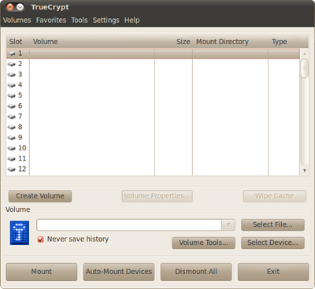

TrueCrypt
Achtung!
Seitdem die ehemalige Projektseite http://truecrypt.org nicht mehr verfügbar ist, residiert die offizielle Seite der TrueCrypt Foundation nun unter http://truecrypt.sourceforge.net/. Dort erfolgt der Hinweis, dass die Entwicklung von TrueCrypt eingestellt wurde und TrueCrypt Sicherheitslücken enthalten könne. Außerdem wird nur noch die Version 7.2 von Truecrypt zum Download angeboten, welche zwar Daten entschlüsseln, aber nicht mehr verschlüsseln kann und vor ihrer eigenen Unsicherheit warnt.
Wer TrueCrypt aus Kompatibilitätsgründen noch benötigt, sollte daher die Version 7.1a einsetzen.
Alternativ sollte der TrueCrypt-Fork VeraCrypt oder zulucrypt-gui  aus den Paketquellen (ab Ubuntu 16.04 Xenial Xerus) verwendet werden.
aus den Paketquellen (ab Ubuntu 16.04 Xenial Xerus) verwendet werden.
Dieser Artikel wurde für die folgenden Ubuntu-Versionen getestet:
Ubuntu 16.04 Xenial Xerus
Ubuntu 14.04 Trusty Tahr
Hinweis:
Dieser Artikel beschreibt die Bedienung von TrueCrypt mit einer grafischen Oberfläche (GUI). Ein Artikel zur Bedienung über die Kommandozeile befindet sich im Archiv.
Zum Verständnis dieses Artikels sind folgende Seiten hilfreich:
TrueCrypt dient zur Verschlüsselung von Festplatten, Teilen davon oder anderen Speichermedien wie USB-Sticks. Lauffähig ist es unter Windows, Linux und Mac OS X. Die Verfügbarkeit der Software für verschiedene Betriebssysteme ermöglicht es, dass z.B. eine verschlüsselte (Container-)Datei plattformübergreifend genutzt werden kann. Obwohl der Quellcode des Programms einsehbar ist, gelten spezielle Lizenzbedingungen, die eine feste Integration in Linux-Distributionen verhindert haben. Diese ungewöhnliche Vorgehensweise hängt mit der Entwicklungsgeschichte von TrueCrypt zusammen.
Bei solchen Verschlüsselungsmethoden muss man sich bewusst sein, dass Daten aus dem verschlüsselten Container im Betrieb auf andere Bereiche der Festplatte gelangen können; beispielsweise in den Auslagerungsspeicher, oder in das Verzeichnis des Druckerspoolers. Sofern die betreffenden Partitionen nicht ebenfalls verschlüsselt sind, können dort eventuell Dateien gelesen oder Reste gelöschter Dateien extrahiert werden.
Kritiker äußerten bereits seit längerem (bisher völlig unbestätigte) Sicherheitsbedenken hinsichtlich TrueCrypt. Primär ging es um Befürchtungen, dass Hintertüren für eine Umgehung der Verschlüsselung im Programm existieren könnten. Nachdem über Crowd-Funding Geld für ein unabhängiges, zweiteiliges Sicherheitsaudit eingesammelt werden konnte, wurde im April 2014 das Ergebnis der ersten Teilprüfung  der Version 7.1a bekannt. Danach wurden zwar die Wartbarkeit des Quelltextes und kleinere Sicherheitsprobleme bemängelt, aber weder eine Hintertür noch grundsätzliche Lücken in der Verschlüsselung entdeckt. Anfang April 2015 konnte der Audit dann abgeschlossen werden. Das Ergebnis des zweiten Teils zeigt, dass auch hier keine kritischen Sicherheitlücken entdeckt wurden.
der Version 7.1a bekannt. Danach wurden zwar die Wartbarkeit des Quelltextes und kleinere Sicherheitsprobleme bemängelt, aber weder eine Hintertür noch grundsätzliche Lücken in der Verschlüsselung entdeckt. Anfang April 2015 konnte der Audit dann abgeschlossen werden. Das Ergebnis des zweiten Teils zeigt, dass auch hier keine kritischen Sicherheitlücken entdeckt wurden.
Ende Mai 2014 wurde das Projekt überraschend eingestellt. Mögliche Alternativen zu TrueCrypt finden sich im Übersichtsartikel Daten verschlüsseln. Als weitere Alternative insbesondere für die Zukunft bietet sich einer der "Nachfolger" von TrueCrypt an. VeraCrypt ist ebenfalls Open Source (Apache 2.0-Lizenz) und basiert auf der bereits erwähnten TrueCrypt Version 7.1a.
Installation¶
 Aus verschiedenen Gründen ist TrueCrypt nicht Bestandteil der offiziellen Paketquellen. Die Installation der Version 7.1a muss daher entweder über ein "Personal Package Archiv" (PPA) [8] oder manuell (an der Paketverwaltung vorbei) erfolgen. Falls TrueCrypt bereits in einer älteren Version auf dem System installiert war, müssen zuerst sämtliche Dateien dieser Installation gelöscht werden. Dazu zählt u.U. auch der versteckte Ordner ~/.TrueCrypt/ im Homeverzeichnis.
Aus verschiedenen Gründen ist TrueCrypt nicht Bestandteil der offiziellen Paketquellen. Die Installation der Version 7.1a muss daher entweder über ein "Personal Package Archiv" (PPA) [8] oder manuell (an der Paketverwaltung vorbei) erfolgen. Falls TrueCrypt bereits in einer älteren Version auf dem System installiert war, müssen zuerst sämtliche Dateien dieser Installation gelöscht werden. Dazu zählt u.U. auch der versteckte Ordner ~/.TrueCrypt/ im Homeverzeichnis.
PPA¶
Adresszeile zum Hinzufügen des PPAs:
ppa:stefansundin/truecrypt
Hinweis!
Zusätzliche Fremdquellen können das System gefährden.
Ein PPA unterstützt nicht zwangsläufig alle Ubuntu-Versionen. Weitere Informationen sind der  PPA-Beschreibung des Eigentümers/Teams stefansundin zu entnehmen.
PPA-Beschreibung des Eigentümers/Teams stefansundin zu entnehmen.
Damit Pakete aus dem PPA genutzt werden können, müssen die Paketquellen neu eingelesen werden.
Nach dem Aktualisieren der Paketquellen kann folgendes Paket installiert werden:
truecrypt (ppa)
 mit apturl
mit apturl
Paketliste zum Kopieren:
sudo apt-get install truecrypt
sudo aptitude install truecrypt
Manuell¶
Auf verschiedenen inoffiziellen Downloadseiten – z.B. bei Heise  , TCnext oder truecrypt71a.com – werden Installationsdateien für Linux bzw. Ubuntu als .tar.gz-Archiv bereitgestellt, die eine bereits vorkompilierte Binärversion enthalten.
, TCnext oder truecrypt71a.com – werden Installationsdateien für Linux bzw. Ubuntu als .tar.gz-Archiv bereitgestellt, die eine bereits vorkompilierte Binärversion enthalten.
Die Archivdatei für Linux herunterladen. Dabei die vorhandene Systemarchitektur (32- oder 64-Bit) beachten.
Das Archiv entpacken [1]
Die entpackte Datei im Terminal [2] mit Root-Rechten ausführen:
neuere Versionen:
sudo sh verzeichnis/zur/Datei/truecrypt-VERSION-linux-ARCHITEKTUR
ältere Versionen:
sudo sh verzeichnis/zur/Datei/truecrypt-VERSION-setup-ubuntu-ARCHITEKTUR
Ein grafischer Assistent wird gestartet. Den Instruktionen folgen.
Hinweis!
Fremdsoftware kann das System gefährden.
Im grafischen Assistenten hat man auch die Möglichkeit, ein .tar.gz-Archiv zu "extrahieren". Dieses befindet sich anschließend im Verzeichnis /tmp. Nach erfolgreicher Installation ist das Programm bei Ubuntu-Varianten mit einem Anwendungsmenü unter "Zubehör -> TrueCrypt" zu finden.
Aus dem Quelltext kompilieren¶
Mit der Einstellung des Projekts ist der Quellcode im Archivformat leider nur noch schwierig zu finden. Eine Quelle ist z.B. das Github-Archiv von DrWhax. In der Archivdatei enthalten ist eine Datei README.txt, die die Vorgehensweise beschreibt. Für Ubuntu 12.04 (für Ubuntu 13.04/13.10 funktioniert die Anleitung nicht mehr) sind dies im Einzelnen die folgenden Schritte:
Benötigte Pakete installieren:
build-essential
nasm
libgtk2.0-dev
libfuse-dev
mit apturl
Paketliste zum Kopieren:
sudo apt-get install build-essential nasm libgtk2.0-dev libfuse-dev
sudo aptitude install build-essential nasm libgtk2.0-dev libfuse-dev
Das Quellcode-Archiv TrueCrypt 7.1a Source.tar.gz herunterladen und entpacken [7], zum Beispiel in das Verzeichnis ~/truecrypt/:
tar xzf TrueCrypt\ VERSION\ Source.tar.gz
Die wxWidgets-Bibliothek von der Downloadseite
herunterladen (Variante "wxAll") und entpacken [7]: tar xzf wxWidgets-VERSION.tar.gz
Die PKCS#11-Headerdateien pkcs11.h
, pkcs11f.h und pkcs11t.h von der Webseite der RSA Laboratories herunterladen und in einem geeigneten Ordner (etwa ~/truecrypt/pkcs11) bereitstellenwxWidgets konfigurieren und kompilieren:
cd ~/truecrypt/truecypt-VERSION-source make WX_ROOT=~/truecrypt/wxWidgets-VERSION wxbuild
Der Pfad zu den wxWidgets-Quellen muss dabei gegebenenfalls angepasst werden.
Truecrypt kompilieren:
cd ~/truecrypt/truecypt-VERSION-source make PKCS11_INC=~/truecrypt/pkcs11 VERBOSE=1 WXSTATIC=1
Der Pfad zu den PKCS#11-Headerdateien muss gegebenenfalls wieder angepasst werden.
Als Resultat erhält man eine zur aktuellen Architektur (32- bzw. 64-Bit) passende ausführbare Datei namens truecrypt im Ordner Main, die man noch an einen geeigneten Ort kopieren muss, etwa in den Ordner /usr/local/bin oder /usr/bin.
Möchte man auch die Dokumentation, die Programmstarter, das Symbol und das Uninstall-Skript zur Verfügung haben, so kann man TrueCrypt zunächst mithilfe des Installationsassistenten einrichten und anschließend die Datei /usr/bin/truecrypt durch die selbst kompilierte ersetzen.
PPC-Architektur¶
Von TryeCrypt gab/gibt es leider nur Binärpakete für Intel-Systeme. Es lässt sich aber sehr leicht selber aus dem Quellcode kompilieren. Wie man das macht, ist im README im Quellarchiv beschrieben. TrueCrypt selbst besteht nur aus einem einzigen Binär-Datei, welches man z.B. anschließend nach /usr/bin/ kopiert. Dieses Umstands der einzelnen Binär-Datei wegen ist TrueCrypt leider nur in englischer Sprache für Linux verfügbar. Für die Integration in Desktop-Umgebungen empfiehlt es sich, zuerst manuell zu installieren, und anschließend die Programmdatei /usr/bin/truecrypt durch eine selbst kompilierte zu ersetzen. Dann bleibt die .desktop-Datei für den Programmstarter, das Symbol und der Menüeintrag erhalten.
Deinstallation¶
Falls man das PPA verwendet hat, nutzt man eine Paketverwaltung zur Deinstallation. Um bei der Variante mit den Binärdateien TrueCrypt wieder zu entfernen, ist der folgende Befehl einzugeben:
sudo truecrypt-uninstall.sh
Nachdem die bisherige Version deinstalliert wurde, kann eine neue Version über den oben beschriebenen Weg installiert werden.
Funktionen¶
Algorithmen¶
TrueCrypt bietet AES, Twofish und Serpent als Verschlüsselungsalgorithmen an. Nebst der Wahl eines einzelnen Algorithmus gibt es die Möglichkeit, die Algorithmen zu kombinieren.
Container¶
TrueCrypt kennt zwei Arten, wie es mit verschlüsselten Daten umgehen kann. Man muss sich vorab für eine dieser beiden Varianten entscheiden. Für beide Typen gilt, dass die Größe des Laufwerkes im Nachhinein nicht mehr verändert werden kann. Gegebenenfalls muss man dann ein neues, größeres Laufwerk erstellen und die Daten von dem alten in das neue Laufwerk kopieren bzw. verschieben.

Container¶
Ein Container ist von außen gesehen eine ganz normale Datei (auf Wunsch mit der Endung .tc), die - wie andere Dateien auch - kopiert, verschoben, auf CD gebrannt oder einfach gelöscht werden kann. Der Container beinhaltet allerdings ein verschlüsseltes virtuelles Laufwerk, das nach dem Einbinden mit TrueCrypt wie jedes andere Laufwerk zum Speichern von Daten genutzt werden kann. Der Vorteil einer Containerdatei ist neben dem einfachen plattformunabhängigen Zugriff mit verschiedenen Betriebssystemen auch die problemlose Sicherung bzw. Wiederherstellung eines Containers.

Partitionen¶
Auch eine komplette Partition oder eine ganze Festplatte kann mit TrueCrypt verschlüsselt werden. Dazu zählen auch Disketten (Floppy-Disks), USB-Sticks oder andere externe Datenträger. Das Verschlüsseln einer ganzen Partition ist weniger flexibel als der Container, da das verschlüsselte Laufwerk an den Datenträger gebunden ist, aber dafür ist die Performance besser.
Volumetypen¶
Außerdem muss man sich noch für eine Art der Einbindung entscheiden:
Standard Volume¶
Diese Partition ist zwar verschlüsselt, wird aber in der Dateistruktur angezeigt. Linux markiert das Volume als nicht lesbar, Windows zeigt an, dass die Partition formatiert werden muss.
Hidden Volume¶
Hier werden zwei Laufwerke erstellt, ein äußeres und ein inneres. Das äußere dient dazu, nur so zu tun als wären wichtige Dateien darin enthalten. Im äußeren Laufwerk aber ist noch ein Laufwerk versteckt, von dessen Existenz nur der Benutzer selbst weiß. Wird man zur Herausgabe des Passworts gezwungen, kann man das Passwort des äußeren Volumes angeben und die Daten des inneren Volumes sind immer noch gesichert.
Konfiguration¶
 Das System kann noch konfiguriert werden, um alle Möglichkeiten von TrueCrypt verwenden zu können. Dabei geht es insbesondere um das Einhängen von den verschlüsselten Geräten in das Dateisystem, was normalerweise nur ein Administrator-Konto darf bzw. Root-Rechte erfordert. TrueCrypt fragt hier dann automatisch nach dem Passwort des Administrators.
Das System kann noch konfiguriert werden, um alle Möglichkeiten von TrueCrypt verwenden zu können. Dabei geht es insbesondere um das Einhängen von den verschlüsselten Geräten in das Dateisystem, was normalerweise nur ein Administrator-Konto darf bzw. Root-Rechte erfordert. TrueCrypt fragt hier dann automatisch nach dem Passwort des Administrators.
Wenn ein Nutzer TrueCrypt nutzen will, aber keine Root-Rechte besitzt, kann eine Gruppe truecrypt angelegt werden. Ihr fügt man sämtliche Benutzer hinzu, die TrueCrypt benutzen dürfen. Wie das geht, ist im Artikel Benutzer und Gruppen erklärt. Man sollte sich bewusst machen, dass mit diesen Rechten TrueCrypt auch missbraucht werden kann, um Daten zu vernichten. Die so privilegierten Nutzer sollten also vertrauenswürdig sein.
Dazu muss die /etc/sudoers-Datei bearbeitet werden [3]. Hinweise dazu findet man im Artikel sudo/Konfiguration (insbesondere ist die Position, an welcher der Eintrag in sudoers steht, wichtig). Darin wird folgende Zeile angefügt:
%truecrypt ALL=NOPASSWD: /usr/bin/truecrypt
Diese Zeile bestimmt, dass die Gruppe truecrypt das Programm TrueCrypt mit Root-Rechten ohne jegliche Passwortabfrage benutzen darf.
Anwendung¶
Nachfolgend werden die wesentlichen Operationen von TrueCrypt erläutert. Dazu gehören an erster Stelle das Anlegen eines verschlüsselten Laufwerkes, sowie das Ein- und Aushängen des Laufwerkes in die vorhandene Verzeichnisstruktur.

TrueCrypt wird über den Menüeitrag oder mit dem Befehl truecrypt gestartet. Es öffnet sich ein grafisches Programm (Front-End), das einem bei der Verwaltung und Nutzung der verschlüsselten Laufwerke hilft.
Container erstellen und verschlüsseln¶
Hier wird ein Dateisystem in einem Ordner erstellt und verschlüsselt, was die Benutzung einer eigenen Partition unnötig macht. "Create Volume" öffnet den Assistenten. Ausgewählt wird "Create a file container". Beim nächsten Schritt muss zwischen einem normalen Laufwerk und einem versteckten Laufwerk gewählt werden.
Partition verschlüsseln¶
Zuerst muss man natürlich eine Partition erstellen, die verschlüsselt werden soll. Instruktionen dazu findet man im Artikel Partitionierung. Wie bei einem Container klickt man auf den Button "Create Volume" und startet damit den Assistenten.
Nun wählt man "Create a volume within a partition/device" und klickt auf "Next". Nun muss man sich zwischen einem versteckten Volume oder einem normalen Volume entscheiden. Hat man sich entschieden, klickt man wieder auf "Next".
Nun muss man den Namen der Partition angeben, beispielsweise /dev/sdb2. Die korrekte Bezeichnung erfährt man im Partionierungsprogramm. Hat man den Namen ausgewählt, klickt man abermals auf "Next" und wählt im nächsten Fenster den Verschlüsselungs- und Prüfsummenalgorithmus, zum Beispiel die doppelte Verschlüsselung mit "AES-Twofish" und dem Prüfsummenalgorithmus "SHA-512". Hat man sich entschieden, klickt man wieder auf "Next" und wählt nun das Passwort. Die empfohlene Länge liegt bei 20 Zeichen. Abermals klickt man auf "Next" und falls man das Standard Volume gewählt hat, kann man nun noch entscheiden, ob die schnelle oder die normale Formatierung benutzt werden soll.
Tipps und Tricks¶

TrueCrypt-Partition mit anderem Dateisystem erstellen¶
Um ein verschlüsseltes Laufwerk mit einem Dateisystem zu formatieren, welches in der grafischen Oberfläche von TrueCrypt nicht vorhanden ist (z.B. NTFS), erstellt man zuerst, wie oben beschrieben, ein neues Volume und wählt "None" als "Filesystem type" aus. Anschließend dieses neue Laufwerk ohne Dateisystem eingehängt:
truecrypt --filesystem=none /dev/sdX
Nun ist das unverschlüsselte Device unter /dev/mapper/truecrypt0 (je nach Anzahl der bereits gemounteten TrueCrypt-Laufwerke steht eine andere Zahl am Ende) verfügbar. Ein Dateisystem kann nun mit mkfs erstellt werden, z.B. FAT, ohne das Gerät (device) wieder mit Nullen zu überschreiben:
mkfs.fat --quick /dev/mapper/truecrypt0
Im Falle von NTFS wäre der Befehl
mkntfs --quick /dev/mapper/truecrypt0
Nun wird die Gerätedatei ausgehängt:
truecrypt -d /dev/sdX
Das neue Laufwerk kann nun mit
truecrypt /dev/sdX /PFAD/ZUM/MOUNTPOINT
eingehängt werden.
Partitionen beim Systemstart einbinden lassen¶
Achtung!
Diese Vorgehensweise kann unter Umständen eine Sicherheitslücke darstellen und ist somit von Hause aus auch nicht so eingestellt. Allerdings ist es für einen Angreifer mit physikalischem Zugang zur Festplatte, der unbefugt die Daten entschlüsseln möchte, unerheblich: Er schließt die Platte einfach an seinen PC an und verwendet seine eigene TrueCrypt-Installation. Das TrueCrypt-Passwort muss er sich in beiden Fällen anderweitig beschaffen.
Um die TrueCrypt-Partitionen gleich nach dem Systemstart einbinden zu lassen und die Passworteingabe auf ein Minimum zu beschränken, kann man dem eigenen Benutzer vollen Zugriff auf TrueCrypt geben. In einem Terminal
sudo visudo
ausführen, und dort am Ende folgende Zeile eintragen (BENUTZERNAME anpassen):
BENUTZERNAME ALL=(ALL) NOPASSWD: /usr/bin/truecrypt
Damit nach der grafischen Anmeldung die Kennwortabfrage für das/die TrueCrypt-Volume(s) auftauchen, können in TrueCrypt die gewünschten Volumes als Favoriten markiert werden. Dann erstellt man ein Skript [4] (z.B. ~/bin/mount_truecrypt-favorits.sh) mit folgendem Inhalt:
1 2 3 | #!/bin/bash # automount of the favorite truecrypt-volumes truecrypt --auto-mount=favorites --load-preferences; |
Dieses ausführbar [5] machen:
chmod +x ~/bin/mount_truecrypt-favorits.sh
Letztendlich muss dieses Skript noch zum Autostart hinzugefügt werden [6].
Das Skript kann nur zuverlässig funktionieren, wenn die Geräte immer am selben Punkt unter /dev erscheinen. Ab TrueCrypt 7.1a kann man als Gerätedatei einfach einen Symlink
/dev/disk/by-id/ata-SAMSUNG_HD103SI_S1VSJ90Sxxxxxx-part1
oder sinngemäß verwenden. Dieser bleibt stets gleich und identifiziert die Festplatte eindeutig, da er die Seriennummer enthält. So geht es auch mit mehreren Festplatten gleichen Modells. Mittels Tab-Completion im Terminal findet man diese Dateien schnell. Mit folgendem Befehl lässt sich prüfen, auf welche Gerätedatei der Symlink zeigt:
ls -l /dev/disk/by-id/ata-SAMSUNG_HD103SI_S1VSJ90Sxxxxxx-part1
In älteren TrueCryptversionen funktioniert das leider nicht zuverlässig und es ist erforderlich, die udev-Regeln zu erweitern. Nachdem die Regeln erstellt und die Geräte neu verbunden worden sind, erscheinen diese unter /dev.
Ein weiteres Problem besteht jetzt noch darin, dass TrueCrypt diese Geräte in seiner Auswahlliste nicht anbietet. Dazu muss man die Geräte einmal von Hand einbinden und danach in TrueCrypt als Favorit hinzufügen. Vorher ist darauf zu achten, dass das im folgenden Beispiel verwendete Ziel (/media/USB-Stick) existiert. Ansonsten ist es mit Root-Rechten
sudo mkdir /media/USB-Stick
anzulegen und mit
sudo chmod go+w /media/USB-Stick/
ausführbar [5] zu machen. Danach könnte das Laufwerk mit
truecrypt /dev/USB-Stick /media/USB-Stick
eingehängt und zu den TrueCrypt-Favoriten hinzugefügt werden. Momentan bindet TrueCrypt beim ersten Start Laufwerke nicht automatisch ein, wenn symbolische Links verwendet werden. Bindet man das Laufwerk erst mit dem originalen Namen (z.B. /dev/sdc1) ein und löst diese Bindung wieder, kann man danach auch den symbolischen Link verwenden.
Laufwerke beim Anstecken per mounttruecrypt anmelden¶
Um per TrueCrypt verschlüsselte externe Laufwerke automatisch beim Anstecken anzumelden, kann das Programm mounttruecrypt verwendet werden. Das Programm kann als fertiges .deb-Paket heruntergeladen werden: mounttruecrypt
Hinweis!
Fremdpakete können das System gefährden.
Hinweis:
TrueCrypt setzt voraus, dass die Ziele der einzubindenden Laufwerke bereits angelegt sind. Diese Verzeichnisse werden von mounttruecrypt automatisch erzeugt und beim Abmelden des Laufwerkes wieder entfernt.
Die udev-Regel könnte folgendermaßen aussehen:
/etc/udev/user.rules
BUS=="usb", KERNEL=="sd?1", ATTRS{serial}=="5A08092298331", SYMLINK+="Backup", RUN+="/usr/bin/mounttruecrypt -u [Benutzer] /dev/[Inhalt von SYMLINK]"Ab Ubuntu 10.10 muss das "BUS" gegen "SUBSYSTEM" ausgetauscht werden. Außerdem ist es ratsam den Parameter ACTION=="add" mit einzufügen. Der Syntax ab Ubuntu 10.10:
SUBSYSTEM=="usb",ACTION=="add", KERNEL=="sd?1", ATTRS{serial}=="5A08092298331", SYMLINK+="Backup", RUN+="/usr/bin/mounttruecrypt -u [Benutzer] /dev/[Inhalt von SYMLINK]"Der Wert für SYMLINK+ kann frei gewählt werden. Der Wert für ATTRS{serial} kann mit unten stehendem Befehl ermittelt werden. Dabei muss /dev/sdc an die eigenen Gegebenheiten angepasst werden. Die Zahl hinter sd? steht dabei für die Partition der angeschlossenen Festplatte.
udevadm info -a -p `udevadm info -q path -n /dev/sdc` | grep ATTRS{serial} Außerdem ist es wichtig den richtigen Wert für SUBSYSTEM bzw. BLOCK herauszufinden.
udevadm info -a -p `udevadm info -q path -n /dev/sdc` | grep SUBSYSTEM=
Hinweis:
In anderen Distributionen ist es möglich, dass /etc/udev/user.rules nicht angelegt ist. In diesem Fall ist diese Datei von Hand anzulegen und in /etc/udev/rules.d/ ein symbolischer Link auf /etc/udev/user.rules zu definieren.
sudo touch /etc/udev/user.rules sudo ln -sv /etc/udev/user.rules /etc/udev/rules.d/80-user.rules
Beispiel¶
Für den Benutzer heinz, der die 2. Partition seiner Festplatte entschlüsselt nach /media/tc-320 gemountet haben möchte, sähe /etc/udev/user.rules folgendermaßen aus:
BUS=="usb", KERNEL=="sd?2", ATTRS{serial}=="5A08092298331", SYMLINK+="tc-320", RUN+="/usr/bin/mounttruecrypt -u heinz /dev/tc-320"Ab Ubuntu 10.10:
SUBSYSTEM=="usb", KERNEL=="sd?2", ATTRS{serial}=="5A08092298331", SYMLINK+="tc-320", RUN+="/usr/bin/mounttruecrypt -u heinz /dev/tc-320"Nach dem Neustart von udev wird beim Einstecken eines Gerätes sollte der TrueCrypt Passwort Dialog angezeigt werden. udev wird per sudo /etc/init.d/udev reload neugestartet.
UTF8-Codierung verwenden¶
Wenn man einen Container oder Partitionen einbindet, die gelegentlich auch unter Windows verwendet werden, dann kann es vorkommen, dass Umlaute und Sonderzeichen falsch dargestellt werden. Abhilfe schafft hier, den Container oder Partition mit UTF8-Codierung einzubinden. Je nachdem, ob man TrueCrypt über die grafische Oberfläche oder über das Terminal benutzt, muss man hier unterschiedlich vorgehen.
In der grafischen Oberfläche fügt man unter "Settings -> Preferences -> Mount Options -> Filesystem -> Mount Options" das Wort "utf8" ein.
Bei der Benutzung im Terminal verwendet man die Option --fs-options="utf8". Beispielsweise so:
truecrypt --fs-options="utf8" /Pfad/zum/Container /Pfad/zum/Einhängepunkt
Probleme beim Aushängen von Containern¶
Seit ca. Jan. 2011 tritt vermehrt das Problem auf, dass beim Aushängen der Fehler:
device-mapper: remove ioctl failed: Das Gerät oder die Ressource ist belegt Command failed
auftritt, obwohl nirgends auf das Gerät zugegriffen wird.
Es gibt zwei Lösungswege:
ein
sudo umount /PFAD/ZUM/MOUNTPOINT
vor
sudo truecrypt -d /PFAD/ZUM/MOUNTPOINT
ausführen.
bzw. vor dem Aushängen mit der GUI den Punkt "do not use Kernel cryptographic services" in TrueCrypt aktivieren.
Siehe dazu auch diesen Forumsbeitrag.
Vorsicht mit Backupprogrammen¶
TrueCrypt aktualisiert von sich aus das Datum des Datei-Containers nicht. Wenn ein Backup-Programm also bei der Datensicherung nur nach Datum geht, wird der Container nie mehr mitgesichert, da er sich laut Datum nicht verändert hat. Für die Windows-Version von TrueCrypt gibt es hierzu in den TrueCrypt-Optionen einen Schalter - bei Unix leider nicht. Workaround: ein touch auf die Container-Datei aktualisiert das Dateidatum nach der Nutzung.
Weitere Hilfe¶
TrueCrypt ist noch viel komplexer und funktionsreicher als in diesem Artikel beschrieben. Das ausführlich bebilderte englische Handbuch "TrueCrypt User Guide" findet man im Ordner /usr/share/truecrypt/ als PDF-Datei (siehe auch Links). Über Strg + H kann es im Programm aufgerufen werden.
Links¶
Sicherheit – Übersichtsartikel zur Datensicherheit
Daten verschlüsseln
 – Alternativen zu TrueCrypt
– Alternativen zu TrueCrypt
TrueCrypt - Unoffical Reference Site
- Rekonstruktion der nicht mehr verfügbaren Original-Homepage
TrueCrypt - Wikipedia
Compiling a list of Truecrypt alternatives
, ars technika, 05/2014Der Weg zu einem verlässlicheren TrueCrypt
- heise Open Source, 10/2013
- Erstellt mit Inyoka
-
 2004 – 2017 ubuntuusers.de • Einige Rechte vorbehalten
2004 – 2017 ubuntuusers.de • Einige Rechte vorbehalten
Lizenz • Kontakt • Datenschutz • Impressum • Serverstatus -
Serverhousing gespendet von